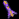

Project: Starfighter Copyright © 2003 Parallel Realities Copyright © 2012 Guus Sliepen, Astrid S. de Wijn and others Copyright © 2015 Julian Marchant This program is free software; you can redistribute it and/or modify it under the terms of the GNU General Public License as published by the Free Software Foundation; either version 3 of the License, or (at your option) any later version. This program is distributed in the hope that it will be useful, but WITHOUT ANY WARRANTY; without even the implied warranty of MERCHANTABILITY or FITNESS FOR A PARTICULAR PURPOSE. See the GNU General Public License for more details. You should have received a copy of the GNU General Public License along with this program. If not, see <http://www.gnu.org/licenses/>.
Project: Starfighter は古典的な2Dシューティングゲームである。 ゲームの中で、あなたはクリスと呼ばれる反乱軍のパイロットになり、軍需企業WEAPCOと戦うことになる。 WEAPCOは全宇宙を掌握し、その鉄拳で支配している。 クリスはその下で多くの人々が苦しみ、死んでいくのを黙って見てはいられなかった。 彼は『ファイアフライ』と呼ばれる最新鋭の宇宙戦闘機を奪い、星系を解放しながら太陽系を目指す戦いを始めた。 このゲームはクリスがWEAPCOのパトロールから逃れるところから始まる。
メニュー
作戦間
ゲーム中
ジョイスティックとゲームパッド
注意 - キー配置は変えられない
Project: Starfighterを起動すると、テキストがスクロールするプロローグが始まる。 待つか、CTRLまたはSPACEキーを押す。
タイトルの表示が始まる。メニューが表示されると(SPACEまたはCTRLキーでタイトルをスキップできる)、下の一覧から選択する。
(*) は保存されたゲームがある場合のみ有効である。
ゲームはタイトルでロードできる。 保存されたゲームがあれば、「ロード」の選択が現れる。 これを選択すると、ロードできるゲームの一覧が表示される。 一覧から選択しロードすると、作戦間画面に戻る。 この画面に戻るためには、「タイトルに戻る」を選択する。
ゲームの保存には2つの方法がある。 1つは作戦間画面で保存する方法である。 カーソルを「保存」アイコンへ移動させ選択する。 すると5つの保存スロットが現れる。 これらの内の1つを選択し、「保存」ボタンを押すとゲームが保存される。 2つ目は、自動的に保存される機能である。 これは、作戦を完了したとき自動的にゲームが保存される。 この機能を使うためには、自動的に保存されるスロットをあらかじめ選択する必要がある。 それはタイトルスクリーンのオプション、または作戦間のオプションで設定できる。
それぞれの惑星系では、作戦間画面の「通信」で作戦の説明を見ることができる。 そこには行うべきことと、どの惑星で実行するかの情報がある。 プレイヤーがその作戦を実行するためには、星系内のその惑星に行く必要がある(詳細は惑星系内の移動を参照すること)。 その惑星に行き、「次の作戦を開始」をクリックすると作戦概要画面へ移行する。 「次の作戦を開始」ボタンは、その惑星での作戦を完了した場合は表示されない。
作戦実行の前に作戦概要画面が表示される。 ここでは作戦の主要な任務と、(存在すれば)補助的な任務が表示される。 作戦の制約や制限時間もここで表示される。 読んだならば、CTRLまたはSPACEキーを押すと続ける。
このゲームの作戦では、1つか複数の任務を遂行しようとすることになる。 任務には主要なものと補助的なものがある。 作戦を完了するためには、主要な任務を全て完了する必要がある。 例えば、最初の作戦はWEAPCOのパトロールから逃れることで、 主要な任務は敵の戦闘機を全て破壊することである。 達成すると、ファイアフライはその場を離れ、作戦は成功したことになる。
一部の作戦では、主要な任務と補助的な任務の2つがあることに注意する必要がある。 この場合、主要な任務を全て完了しても、補助的な任務が残っている場合は、ファイアフライはその場を離れない。 プレイヤーは補助的な任務を完了しても、ESCキーを押してその場を離れてもよい。 補助的な任務は任意である。
作戦の間、画面の下のほうにメッセージが現れる場合がある。 これらのメッセージは、獲得したアイテムや作戦の情報を表している。
矢印は敵の位置を示すもので、プレイヤーに敵の艦の方向を知らせている。 矢印はTキーを押すことで3つのモード(オフ、ミッションターゲットのみ、全てあり)を選択できる。 矢印は存在する全ての敵を破壊しなければならない作戦では特に有用である。 単純に矢印を追えば敵を見つけることができる。 矢印は目標がすぐ近くにいる場合は表示されない。 一部の作戦(ボスなど)では、ミッションターゲットの矢印が作戦の目標を指している。 その場合、ターゲットのシールドの残りも画面の右下に表示される。
作戦を実行するためには、その惑星に移動する必要がある。 惑星を選択するためには、作戦間画面の「星系マップ」で惑星系を表示し、惑星をクリックする必要がある。 惑星間の移動は危険な場合がある。 しかし、幸いなことに、スピリット系は安全で、迎撃にあう危険性はない。 そのため選択するとすぐに移動が完了する。
他の惑星系では、目的に向かって移動する途中でWEAPCOのパトロールと遭遇する危険性がある。 スピリット系の後では、まずプレイヤーは惑星をマウスでクリックする。 すると、画面の右下の「目的地」に惑星の名前が表示される。 そして、「目的の惑星へ向かう」アイコンが現れるので、それをクリックするとプレイヤーは目的地の惑星への移動を始める。
別の惑星への移動は、画面の下の2つの惑星で現される(片方が移動下で、もう片方が移動先である)。 赤い帯が移動の進捗を表している。 進行の速さは2つの惑星間の距離によって異なる。 この間、敵と遭遇することがある(遭遇を参照すること)。 赤い帯が完全に達すると、移動が完了し目的の惑星に到着する。
惑星系内の2つの惑星の間を移動する間、敵と遭遇することがある。 その場合、作戦実行と同じような状況になる。 任務は攻撃してくる迎撃機を全て排除することである。 それが完了すると、プレイヤーは自由になりその場を離れる。
敵との遭遇には別の目的がある場合もある - WEAPCOパトロールが奴隷を搬送している場合などである。 その場合、任務の1つは一定数の奴隷を救出することになる。 これは遭遇した場合のみ可能である。
覚えておくべき重要なことの1つは、敵と遭遇して受けたダメージは目的の惑星に到達するまで回復しないということである。 もしプレイヤーが敵と遭遇して大ダメージを受けた場合でも、再び敵の攻撃にあうことがある。 これはとても危険な状況である。
ゲームの途中で金(キャッシュ)を得ることができる。 金は破壊された敵の艦船から得ることができる。 (惑星間で遭遇した敵からは金を得られないので注意すること。)
金はファイアフライの強化や弾薬の購入で使う。 作戦間画面の「ファイアフライを強化」で購入することができる。
装備の強化はゲームがある程度進むまでできないので、金を貯めるのを忘れないこと。
敵の艦船を破壊すると、アイテムやキャッシュを落とすことがある。 一部の敵はパワーアップアイテムを落とし、それを取ると武器が一時的に強化される。 以下は作戦の最中に獲得できるアイテムの一覧である:
| キャッシュ - 収入になる | |
| プラズマ火薬 - プラズマ火薬が増える | |
|  | ロケット弾 - ロケット弾が増える |
| シールド - シールドが回復する | |
| プラズマ火力ブースター - プラズマ弾の火力が増す | |
| プラズマ出力範囲ブースター - 一度に発射できるプラズマ弾の数が増す | |
| プラズマ冷却ブースター - プラズマ弾の連射速度が増す | |
| スーパーチャージ - 5方向への拡散、強力な火力と冷却を得る (まれ) |
作戦の後に短いカットシーンがある場合がある。 このシーンでは物語やゲームのヒントが与えられる。 このシーンを飛ばしたい場合はESCキーを押す。 このシーンを飛ばすのは既に一度見た場合のみにした方がよい。
ファイアフライのシールドが0になった場合や、主要な作戦に失敗したときゲームオーバーとなる。 この場合、ゲームオーバー画面が表示される。 コンテニューする場合は、CTRLまたはSPACEキーを押す。 他のキーを押すとタイトル画面に戻る。 一部の作戦では、シド・ウィルソンが殺害されるとゲームオーバーとなる。
Parallel RealitiesはAmiga上で最初はAMOS、後にBlitz Basic 2を使ってゲームを作成していた。 作られたゲームはBOTSS Trilogyや、特にTANX Squadronの強い影響を受けていた。 TANX Squadronは1999年夏にAmiga Format's contributor prizeを受賞したゲームである。 Project: Starfighterの作成は、最初はAmiga上で始まったが、それは完成しなかった。 2002年、初めてC言語を使ってLinux上で作成が再開された。 このゲームは、最初は簡単なアイデアで始まり、成果物として完成した。 我々は楽しんでもらえることを願っている。
Project: Starfighter
Copyright © 2003 Parallel Realities
Copyright © 2012 Guus Sliepen, Astrid S. de Wijn and
others
作成にはSDLライブラリを使用している。
原作:http://starfighter.nongnu.org
日本語訳版:https://osdn.jp/projects/starfighter-jp/